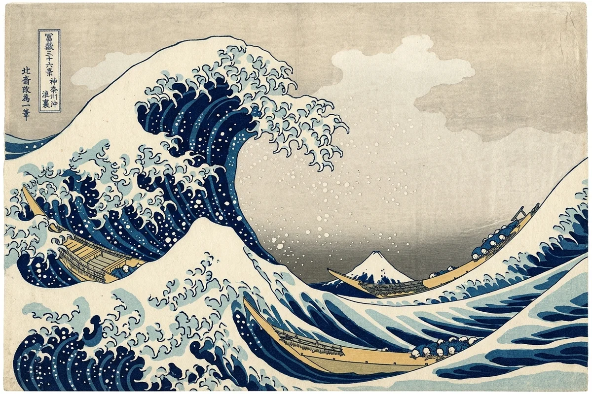
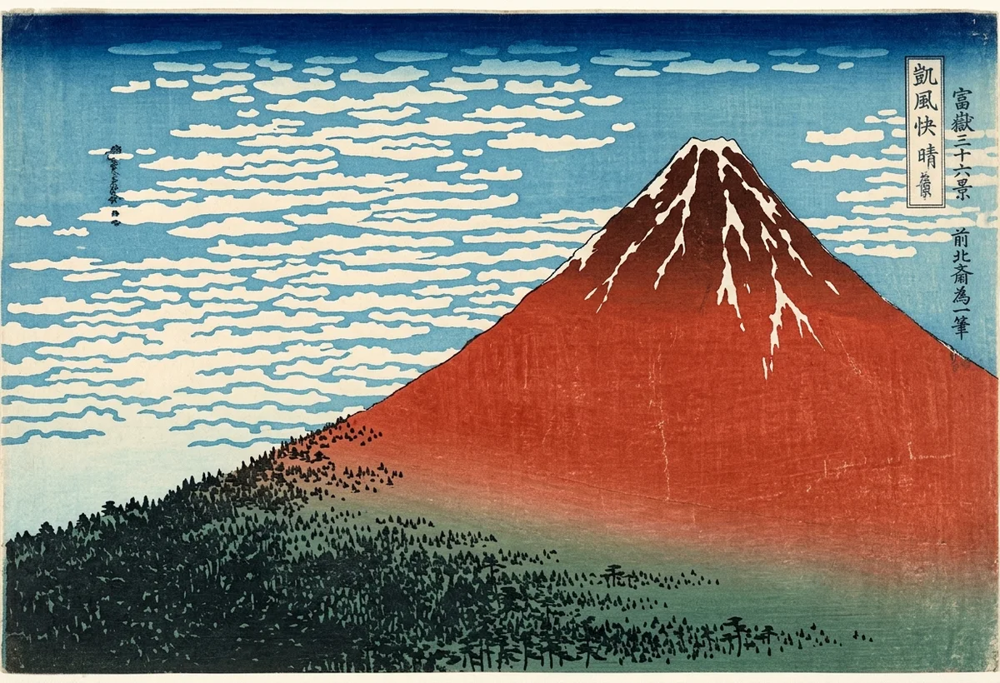
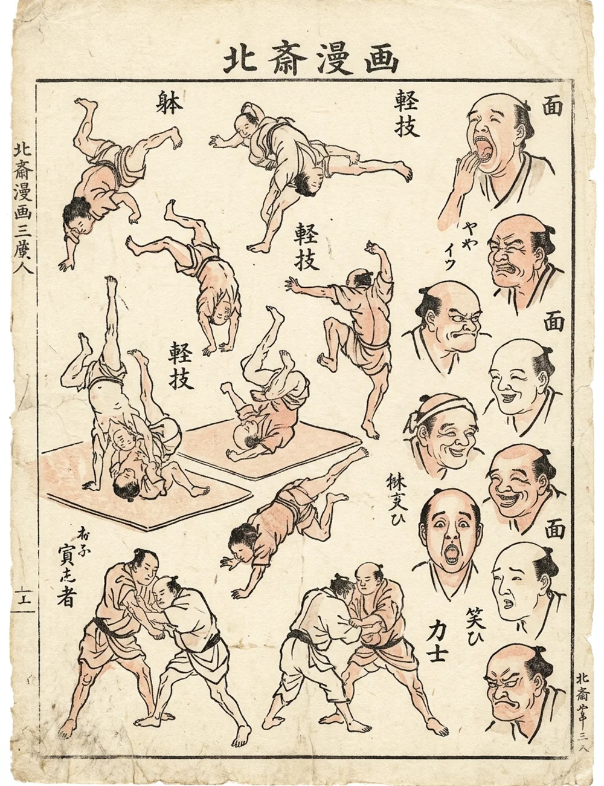

Visual Art · Printmaking Engineering · Mathematics & Chemistry
Katsushika Hokusai
A curling wave, three fragile boats, a distant mountain. Explore how Hokusai turned observation into a memorable design—and how carvers and printers turned that design into many colorful impressions.

Start here · 25–35 minutes · Art + engineering
How can one image feel so powerful?
Open the wave above. Look silently for 30 seconds, then find three boats, the tiny Mount Fuji, and the curling foam. Where does your eye go first? What makes the people seem vulnerable?
Today’s investigation
- Look for contrast, scale, and repeated shapes.
- Predict what happens when printed colors shift.
- Test registration in the studio below.
- Make a small design and explain one choice.
Meet the artist
Hokusai (1760–1849) worked in Edo, now Tokyo. He designed prints, painted, and made illustrated books. His landscapes made everyday work and changing views of nature compelling subjects.
The Great Wave, made about 1831 when he was around 70, belongs to Thirty-Six Views of Mount Fuji. The mountain connects the series even when it appears small in the distance.
A lifetime of learning
Hokusai trained in Katsukawa Shunshō’s studio, published the first volume of Hokusai Manga in 1814, and continued making art into his eighties. These drawing books collect observations and sketches; they are not modern narrative comics.
The Engineering of Moku-hanga: Woodblocks & Kentō Precision
Japanese ukiyo-e was never the work of a lone romantic painter in a studio. It was a collaborative process involving design, carving, printing, and publishing:
Hokusai drew the master linework (hanshita-e) in black sumi ink on gossamer-thin mulberry paper. Once approved by government censors, this drawing was pasted face-down onto the woodblock and destroyed during carving!
Using razor-sharp bull-nosed gouges and chisels (hangi-tō), the carver peeled away every speck of negative space from dense, fine-grained mountain cherry wood (yamazakura), leaving fine raised lines to carry pigment.
The printer applied water-based pigment mixed with rice-flour paste (nori) using stiff horsehair brushes (marubake), laid damp washi paper into registration notches, and burnished with a coiled bamboo-skin disc (baren).
Publishers like Nishimuraya Yohachi (Eijudō) financed the cherry wood, paid the artisans, and sold finished prints to Edo citizens as affordable commercial artworks.
The Mechanical Registration Problem: Kentō (見当)
To print a full-color artwork like The Great Wave, the printer pressed damp washi paper onto separate carved surfaces for the outlines and colors. Wet mulberry paper stretches when humid and shrinks as it dries. If a sheet shifted by even half a millimeter, the dark wave outlines would separate from the blue water, creating unsightly gaps and color bleed.
Think of a paper corner against two guides: the guides help you return it to the same position for each color.
Interactive Lab: The Ukiyo-e Print Studio
Step into the workshop of a 19th-century master printer. Predict: if the color shifts right while the outline stays still, where will a gap appear? Press Slip Kentō, inspect the mountain and wave edges, then restore alignment. Turn off a layer to discover what it contributes.
Classroom model: simplified shapes inspired by the print, not a reconstruction of its historical blocks. Offsets are canvas units, not measured millimeters. White foam here is a display layer; pale areas in a print can be unprinted paper. The baren animation demonstrates the tool’s movement, not pressure or ink transfer.
Moku-hanga Printing Workbench
Aligned: colors and outlines share the same position.
Woodblock Layer Palette (Click to enable/disable individual carved blocks):
Composition: curves, triangles, and echoes
Compare the large wave with the small triangle of Fuji. Curving water suggests motion; the mountain’s stable outline offers a contrast. The small foreground wave also echoes the mountain’s shape.
Test a geometric interpretation
This is a schematic drawing with adjustable overlays. A spiral can help us discuss a curl, but it does not prove that Hokusai used an equation. Repeated foam shapes suggest visual echoes, not an exact mathematical fractal.
A logarithmic spiral follows r = a × ebθ. Increase b: what changes? Does the curve match every part of the wave, or only suggest its motion?
Try drawing with simple shapes
Hokusai’s drawing manuals encouraged learners to build forms from simple shapes. This classroom sketch lets you compare construction guides with finished lines. Pick a subject, move to 0% ink, then reveal the drawing. Which guide helps most?
Ryakuga Haya-oshi Drawing Sandbox
Why the blue matters
Prussian blue is a synthetic iron-based pigment that became important in Japanese printing around Hokusai’s time. Its intense color expanded printers’ possibilities. Scientific analysis of the Met’s Great Wave impressions identified both Prussian blue and indigo, including mixtures and overlapping impressions.
Light can change pigments and paper. Dayflower blue is especially sensitive, and Prussian blue is not immune to fading. Preservation depends on exposure, materials, and storage—not simply the number of years since printing.
Make a museum display decision
You want students to study an original print. Which plan helps preserve it?
Choose a plan, then explain the tradeoff between access and preservation.
Gallery: Masterworks of Katsushika Hokusai
Compare three works: how does Hokusai change mood with color, scale, and subject? Click any artwork to enlarge it in the classroom lightbox.
The definitive masterwork of ukiyo-e. Notice how the three narrow cargo boats (oshiokuri-bune) lean into the ocean swell, their rowers braced flat against the thwarts.
Katsushika Hokusai · Public domain · Tokyo National Museum
In late summer, the early dawn sun turns Mount Fuji a radiant copper red. Compare the broad mountain silhouette with the delicate pattern of clouds.
Katsushika Hokusai · Public domain · British Museum
Literally "whimsical sketches." Spanning 15 volumes and 4,000 drawings, this series cataloged human postures, martial arts, ghosts, animals, and machines, becoming a seminal drawing bible.
Katsushika Hokusai · Public domain · National Diet LibraryA design that traveled
Japanese prints influenced European artists during the nineteenth-century enthusiasm called Japonisme. Their cropping, asymmetry, and areas of flat color offered new approaches to composition. Hokusai’s influence continues in contemporary art and design.
Make your own view · 10 minutes
Draw a familiar landmark three times: once large, once tiny behind a foreground object, and once partly hidden. Use two colors and leave some paper blank. Choose the most effective view and explain how scale or framing changes the mood.
Practice Problems
Test your knowledge of Hokusai's art, printmaking engineering, mathematics, and chemistry.
Easy1. In Japanese ukiyo-e woodblock printing, what were the permanent reference notches carved into the cherry wood blocks called to ensure multi-color alignment?
Easy2. What synthetic inorganic pigment, imported through Dutch traders, enabled Hokusai to produce the deep, lightfast blues in Thirty-Six Views of Mount Fuji?
Medium3. Which spiral in our classroom overlay has a radius that grows exponentially with angle?
Medium4. How old was Hokusai when he published his masterpiece series Thirty-Six Views of Mount Fuji around 1830–1832?
Challenge5. Which two tools could you use to make the circles and straight lines in our drawing exercise?
Medium6. What was the bamboo-skin pad called that printers pressed and rubbed by hand against the back of washi paper to transfer ink from the woodblock?
Challenge7. What 19th-century European artistic movement was sparked when French Impressionists and Post-Impressionists encountered Hokusai's prints?
Exit ticket: evidence beats guessing
Your writing stays on this page only. Copy it before leaving.
Look further · museum sources
- The Met: The Great Wave—Anatomy of an Icon · pigment and printing evidence
- British Museum: The Great Wave—spot the difference · compare impressions
- British Museum: conserving Hokusai prints · light and preservation